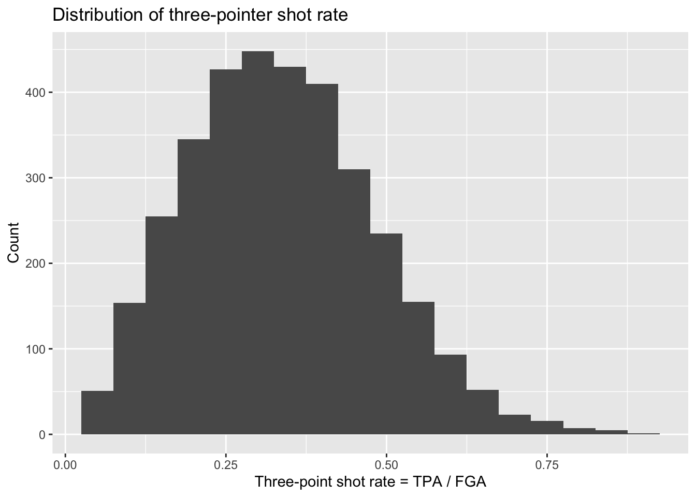
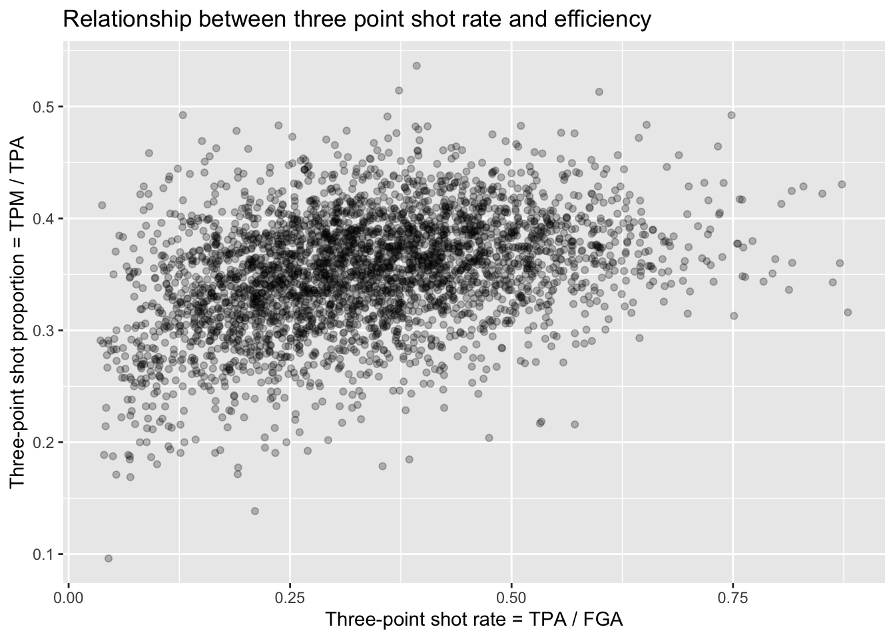
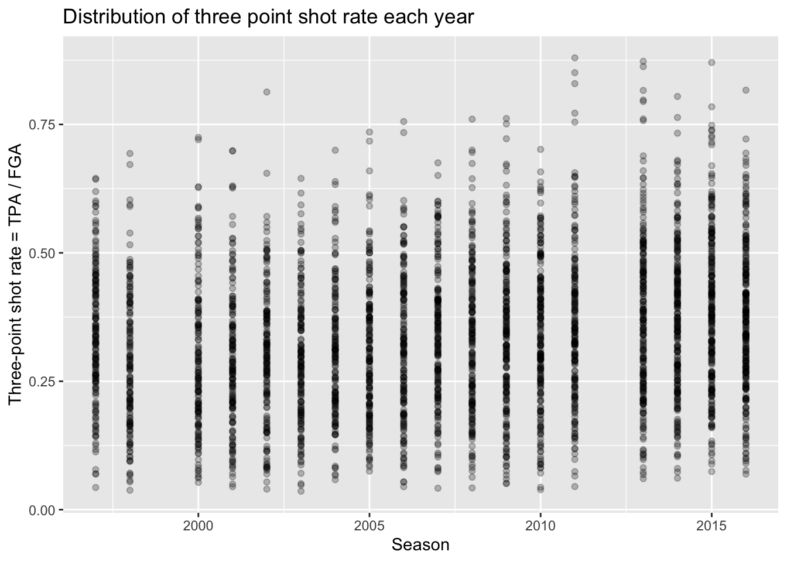
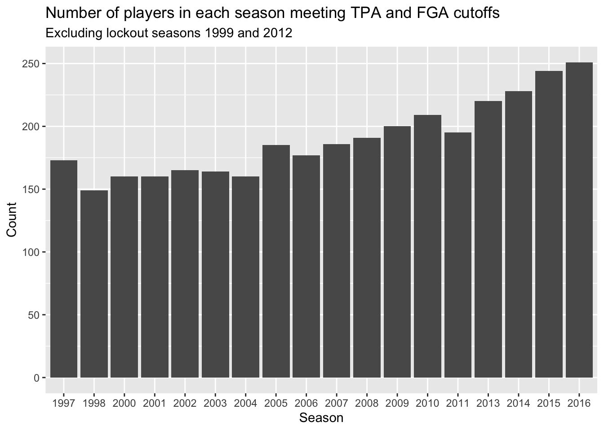
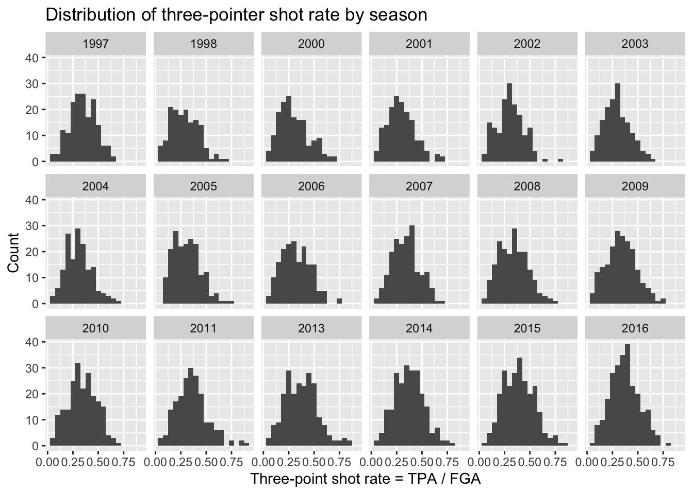
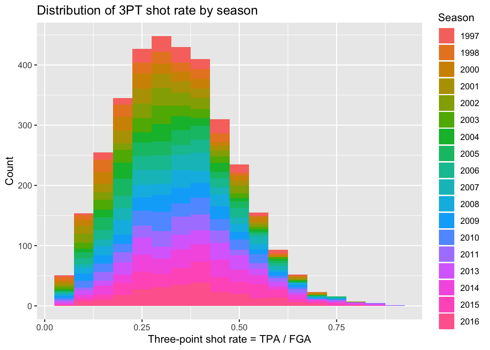
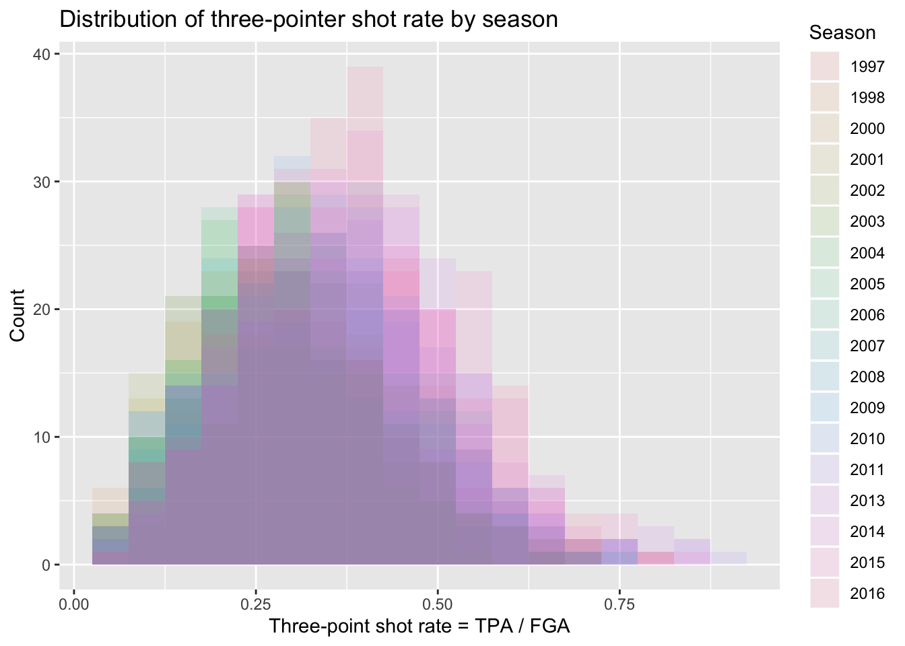
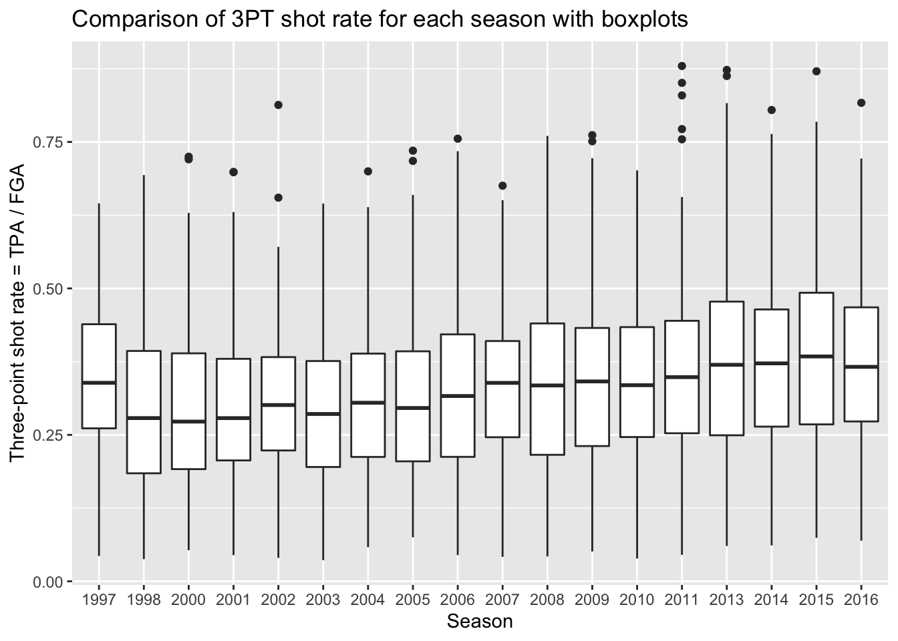
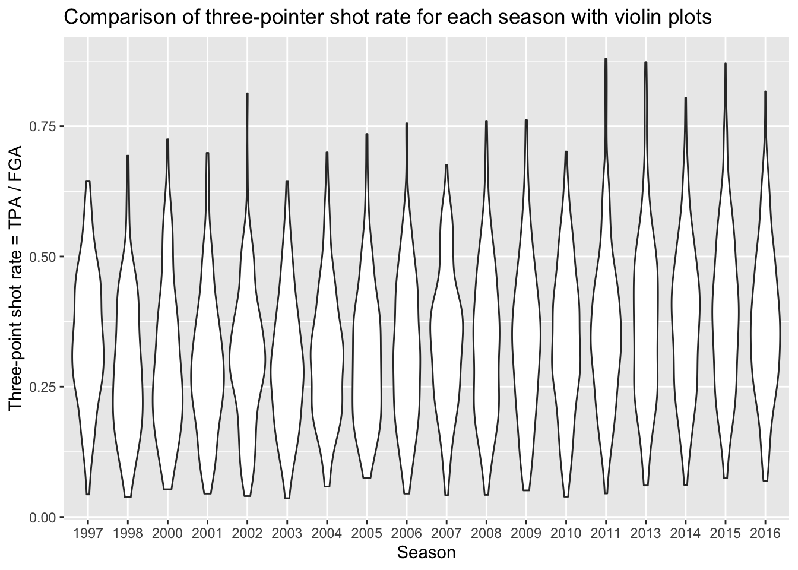
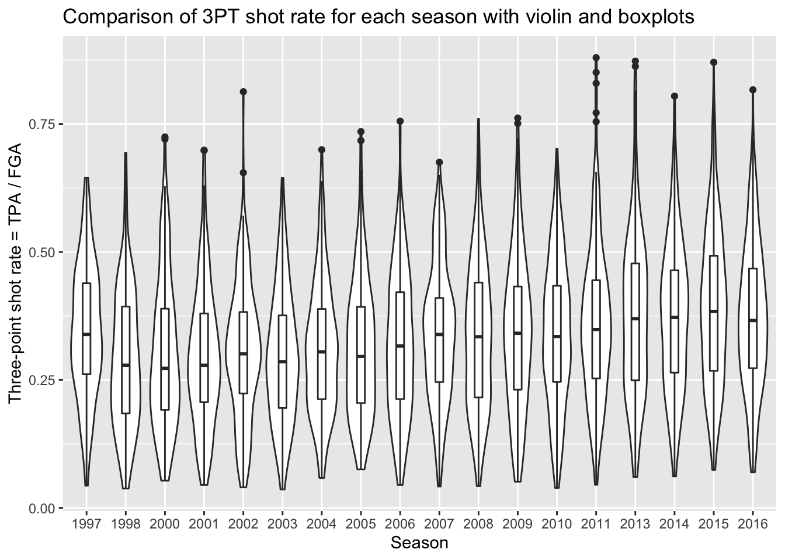

Lecture 3: Visualizations with categorical data and grouped operations
We’re going to pick up right where we left off in Lecture 2 by loading the nba_shooting dataset we created using the filter and mutate functions.
We’re interested in the rate and efficiency of three-point attempts over time. To start, let’s make simple histograms for three_point_fg_rate = TPA / FGA and TPP following what we learned in Lecture 2.
> nba_shooting %>% ggplot(aes(x = three_point_fg_rate)) + geom_histogram(binwidth = 0.05) +
+ # label!
+ labs(x = "Three-point shot rate = TPA / FGA", y = "Count", title = "Distribution of three-pointer shot rate")
> nba_shooting %>% ggplot(aes(x = TPP)) + geom_histogram(bins = 30) + # label!
+ labs(x = "Three-point shot proportion = TPM / TPA", y = "Count", title = "Distribution of three-point shot proportion")
Next let’s make a scatterplot showing the relationship between the rate at which players attempt three point shots and the proportion at which they make them:
> nba_shooting %>% ggplot(aes(x = three_point_fg_rate, y = TPP)) + geom_point(alpha = 0.25) +
+ labs(x = "Three-point shot rate = TPA / FGA", y = "Three-point shot proportion = TPM / TPA",
+ title = "Relationship between three point shot rate and efficiency")
Unsurprisingly, for the most part we see a random scattering of points. But we can see that players who attempt a minimal proportion of three-point shots for their field goal attempts also have typically low values for their three point shot efficiency. You can expect players that can make three-pointers more often to then attempt more and more three-pointers - but, as the plot shows, they will reach a point where their advantage diminishes.
Plotting categorical data
The style of shooting in the NBA has been evolving over the past decade, with teams attempting more and more three-point shots than ever before. We can look into this trend ourselves using the nba_shooting dataset we constructed. Something such as the season/year could be considered like a continuous variable. For instance, we could create a scatterplot with the SEASON variable on the x-axis and each of the variables of interest on the y-axis, such as:
> nba_shooting %>% ggplot(aes(x = SEASON, y = three_point_fg_rate)) + geom_point(alpha = 0.25) +
+ labs(x = "Season", y = "Three-point shot rate = TPA / FGA", title = "Distribution of three point shot rate each year")
It is hard to see any real differences between the years this way. Instead, we can treat the season as a categorical variable to then more appropriately compare the distributions between each year. To do so, we are going to create a new variable in our dataset called season_factor which is simply a new version of the SEASON variable but is converted to a special type of data in R known as a “factor”. We won’t cover the details, but “factors” are essentially categorical variables with an order to them. By default, when we create season_factor using the as.factor() function, the natural chronological order is used.
Now with this variable, prior to comparing distributions between the different seasons, we will create a barchart to compare the number of players we have in each season that met our criteria from Lecture 2.
This can be done using geom_bar, and all we have to specify is the categorical variable to be displayed along the x-axis - ggplot will count the number of each player and display it for us just like geom_histogram.
> nba_shooting %>% ggplot(aes(x = season_factor)) + geom_bar() + labs(x = "Season",
+ y = "Count", title = "Number of players in each season meeting TPA and FGA cutoffs",
+ subtitle = "Excluding lockout seasons 1999 and 2012")
What shouldn’t come as a surprise is that we’re seeing more and more player stats in more recent years. This makes sense since more players are shooting three-pointers more frequently now.
Comparing distributions
Now that we have a categorical version of the season to use for plotting, we can proceed to compare the distributions of the three-point stats in a variety of ways.
Naturally you can make multiple histograms to compare the distributions of several different categories with simple extensions of code you are already familiar with. This can be done in several different ways.
Facets
We can use facets to create histograms for each different season. Facets allow you to separate graphs by category. We do not need to do anything different from our above code for creating histograms except we only need to add a facet layer to our graph. The first argument of facet_wrap is the column of our dataset that contains the category information.Note that we need a tilde (~) in front of season_factor. The second argument of facet_wrap specifies the number of rows for which to display the graphs.
> nba_shooting %>% ggplot(aes(x = three_point_fg_rate)) + geom_histogram(binwidth = 0.05) +
+ # label!
+ labs(x = "Three-point shot rate = TPA / FGA", y = "Count", title = "Distribution of three-pointer shot rate by season") +
+ facet_wrap(~season_factor, nrow = 3)
Although we can now see a histogram of three-point shot rate for each separate season, it’s a little hard to make comparisons across all the years.
Colors
We can also proceed to create multiple histograms using colors instead of facets, by just adding the fill = season_factor line to the aes function. NOTE: it’s important to remember the difference between fill and color. In this case, fill actually changes the literal fill of the bars while color changes the line. This differs from geom_point and is important to keep in mind when making plots.
> nba_shooting %>% ggplot(aes(x = three_point_fg_rate, fill = season_factor)) +
+ geom_histogram(binwidth = 0.05) + # label!
+ labs(x = "Three-point shot rate = TPA / FGA", y = "Count", fill = "Season",
+ title = "Distribution of three-pointer shot rate by season")
Well that’s a weird looking plot! This is because by default the multiple histograms will be stacked on top of one another. We can instead change the position of the geom_histogram call to be equal to “identity” rather than the default which is “stacked”. When doing this we’ll have several histograms overlaid on top of each other, so it’s important to change the alpha to be a lower value.
> nba_shooting %>% ggplot(aes(x = three_point_fg_rate, fill = season_factor)) +
+ geom_histogram(binwidth = 0.05, position = "identity", alpha = 0.1) + # label!
+ labs(x = "Three-point shot rate = TPA / FGA", y = "Count", fill = "Season",
+ title = "Distribution of three-pointer shot rate by season")
Overall this is still a rather difficult figure to digest. Instead, we should make figures that take advantage of the natural ordering implied by the season along an axis while displying various comparisons of the distributions.
Boxplots
By far the simplest way to compare distributions across many levels of a categorical variable is with boxplots. Side-by-side boxplots can be generated easily using geom_boxplot. Now we specify the categorical variable we want mapped to the x-axis (season_factor) and then the variable we want mapped to the y-axis.
> nba_shooting %>% ggplot(aes(x = season_factor, y = three_point_fg_rate)) + geom_boxplot() +
+ # label!
+ labs(x = "Season", y = "Three-point shot rate = TPA / FGA", title = "Comparison of three-pointer shot rate for each season with boxplots")
Remember, boxplots are displaying summary statistics (median, min, max, and percentiles) which allows us to easily see an increase in the median three-point shot rate over time. But boxplots are extremely limited visualizations! All they provide are summary statistics - think of all the information we observed in histograms that are lost in boxplots! There is no way of knowing if we’re looking at distributions with multiple modes!
Violin plots
A much more informative plot than only a boxplot, is a violin plot. Violin plots display the density curves giving us the general shape of a distribution. And of course, there’s a geom for that as well called… geom_violin!
> nba_shooting %>% ggplot(aes(x = season_factor, y = three_point_fg_rate)) + geom_violin() +
+ # label!
+ labs(x = "Season", y = "Three-point shot rate = TPA / FGA", title = "Comparison of three-pointer shot rate for each season with violin plots")
This gives us a sense of the distributions in each season, and any sort of subtle differences over time. What’s missing from this plot is the key points provided by boxplots to show the increasing rate of three point attempts. Because we are using ggplot, we can easily add the boxplot layer on top of the violin plots to get the best of both visualizations! We just specify a small width for our boxplots so that they don’t take up too much space and fit inside the violin plots.
> nba_shooting %>% ggplot(aes(x = season_factor, y = three_point_fg_rate)) + geom_violin() +
+ geom_boxplot(width = 0.2) + # label!
+ labs(x = "Season", y = "Three-point shot rate = TPA / FGA", title = "Comparison of three-pointer shot rate for each season with violin and boxplots")